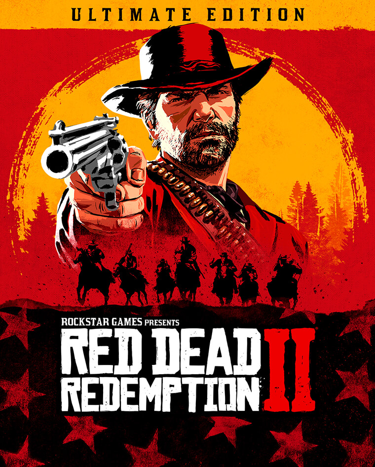
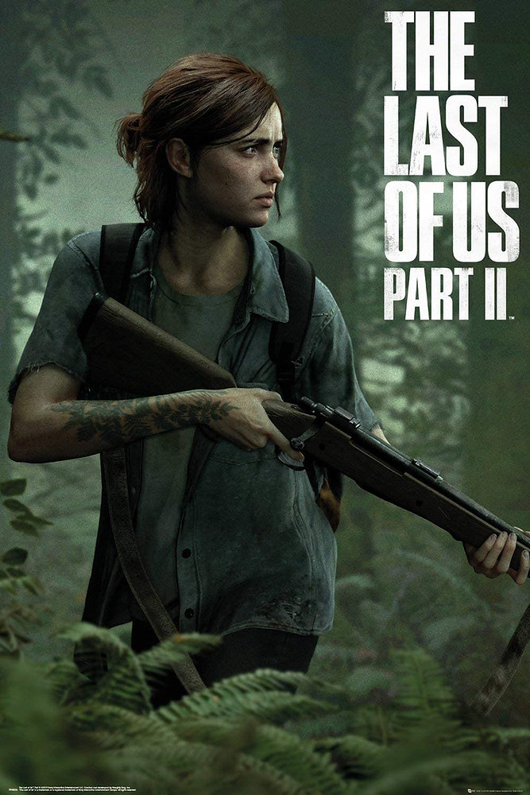

Jogos que você precisa jogar
God of War(2018)

Pela primeira vez na série, há dois protagonistas principais: Kratos, o antigo deus da guerra grego que é acompanhado por seu jovem filho Atreus.Após a morte dasegunda esposa de Kratos e mãe de Atreus, eles viajam para cumprir sua promessa de espalhar suas cinzas no pico mais alto dos nove reinos. Kratos mantém seu passado conturbado em segredo de Atreus, que não tem consciência de sua natureza divina. Ao longo da jornada, eles encontram monstros e deuses do mundo nórdico.
Red Dead Redemption 2
Em “Red Dead Redemption 2”, os jogadores assumem o papel de Arthur Morgan, um fora-da-lei no Velho Oeste americano. A história segue a gangue de bandidos liderada por Dutch van der Linde enquanto eles fazem um último esforço para sobreviver em um mundo que está mudando rapidamente. Os jogadores vão experimentar a ameaça constante das autoridades e dos outrosbandidos, além de ter que lidar com as dificuldades da vida no Velho Oeste, como a fome e o tempo ruim.
The Last of Us Part 2
Ambientado cinco anos após os eventos de The Last of Us, o jogador assume o papel de duas protagonistas em um Estados Unidos pós-apocalíptico: Ellie, que busca por vingança após um evento traumático, e Abby, uma soldada que se envolve em um conflito entre uma milícia e um culto.
The Witcher 3 Wild Hunt

Lançado em 2015, The Witcher 3: Wild Hunt marcou época como um dos jogos mais aclamados da geração. Ele conta a aventura do bruxo Geralt de Rívia em busca da sua filha, Ciri, enquanto enfrenta inimigos mortais e explora um mundo cheio de possibilidades, desafios e aventuras.